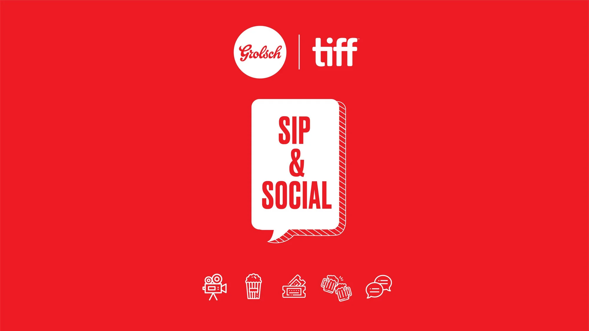

The problem
An official TIFF partner at risk of looking like a logo.
Grolsch × TIFF / Brand activation
An official TIFF partner at risk of looking like a logo.

A 400-year-old lager walks into a film festival.
Grolsch had 400 years of heritage, a brilliant swing-top bottle and the official beer spot at TIFF. The danger? Becoming a green logo politely watching the festival happen.
We gave the partnership a job: make the beer part of the conversation, from the billboard above the street to the popcorn on the bar.


Fifty pieces. One very green point of view.
Billboards, program ads, packs, patios, trivia cards and plenty in between. Different formats; same wink.
CHARACTER and BOLD became giant downtown headlines.
Part trivia, part party, part reason to talk.
Toronto drinks outside the second weather permits.


A beer with character should show some.
Festival photography, print, retail and hospitality all carried the same confident tone. The beer sat in the middle without behaving like a sponsor.
Don’t sponsor culture. Join it.
Grolsch earned a role in the festival rather than simply renting visibility around it. The system worked from giant outdoor media down to the thing sitting beside a pint.